![Example 7- This is a 4 step tree diagram with subtraction symbol as root node, which is having 2 plus nodes as its branches. First plus node has 8 in the left side and multiplication node in the right side as branches. second plus node has multiplication node in the left side and 5 in the right side as branches. In the last step first multiplication node has 5 in the left side and 2 in the right side as branches, second multiplication node has 2 in the left side and 3 in the right side as branches.](images/image-161.png)
Learning Objectives
To know how to represent numerical and algebraic expressions by tree diagrams.
To know how to write numerical and algebraic expressions from tree diagrams.
In today's digital era, it is almost impossible to imagine a day without computers. Right from small shops to big software companies, the use of computers is inevitable. If there are no computers, most of the works will be stopped. Computers are able to find solutions even for complicated numerical expression and algebraic expression in quick and easy way. The answer given by the computer will be very precise and need not to be recalculated. There will be a question, how the computer read this expression?
Yes, Computers use Tree diagram to perform billions of operations in a uniform way and gives the answer. In this chapter we will learn about the Tree diagram for both numeric and algebraic expressions.
MATHEMATICS ALIVE – INFORMATION PROCESSING IN REAL LIFE
Consider the numerical expression open bracket (9 minus 4) into 8 close bracket divided by open bracket (8 plus 2) into 3 close bracket. We can try to understand the expression in a better way through the tree diagram.
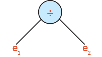
2) e1 equalto f1 into f2 Where, f1 equalto 9 minus 4 and f2 equalto 8
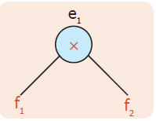
3) f1 equal to r1 minus r2 where r1 equal to 9 and r2 equal to 4. f1 is represented as:
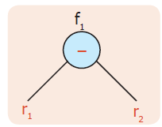
Similarly, the trees can be developed from e2.
4) Putting all together, we get the following tree diagram
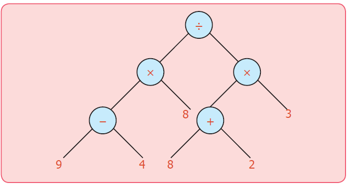
It is a picture which look like an upside-down tree! Every node has one or two branches. And the leaves are numbers. The branching nodes have operations on them. It is called tree diagram and the tree diagrams are general ways of representing arithmetical expressions. Here trees are drawn upside down. The root is at the top, the leaves are at the bottom. Since all the arithmetical operations are binary (Involving two numbers) we have only 2 ways branching in the tree.
Can you represent the addition of four numbers in the same way?
Yes, there is a way for addition of 4 numbers.
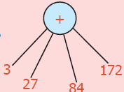
Let us learn how to represent the statement problems in tree diagram
Example 1: In the flower exhibition conducted at Ooty for 4 days the number of tickets sold on the first, second, third and fourth days are one lakh ten thousand and ten comma 75,070 comma 25,720 and 30,636 respectively. Find the total number of tickets sold.
Solution:
Number of tickets sold on the first day equal to one lakh ten thousand and ten
Number of tickets sold on the second day equal to 75,070
Number of tickets sold on the third day equal to 25,720
Number of tickets sold on the fourth day equal to 30,636
Total equal to two lakh forty one thousand four hundred and thirty six
Total number of tickets sold equal to two lakh forty one thousand four hundred and thirty six.
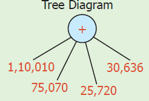
Example 2: In one year, a paper company had sold Six lakh twenty five thousand six hundred and ten notebooks out of a stock of Seven lakh fifty thousand and eight hundred notebooks. Find the number of notebooks left unsold.
Solution:
Number of Notebooks in stock equal to Seven lakh fifty thousand and eight hundred
Number of Notebooks sold equal to Six lakh twenty five thousand six hundred and ten
Number of notebooks left unsold equal to one lakh twenty five thousand one hundred and ninety
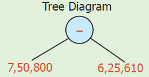
Example 3: Vani and Kala along with three other friends went to a butter milk shop. The cost of one butter milk is ₹ 6. If 9 more friends joined them, then how much money did they have to pay? Vani said they had to pay ₹ 84 whereas Kala said they had to pay ₹ 59. Who is correct?
Solution:
This confusion can be resolved by using the brackets in the correct places like (5 plus 9) into 6.
It is further clear from the tree diagram. Therefore, Vani is correct.
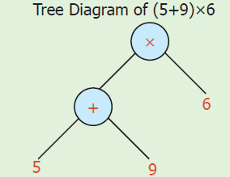
Solution:
Quantity of rice to be distributed to 5000 families equal to 1 lakh kilogram
Quantity of rice distributed to each family equal to1 lakh divided by 5,000 equal to 20 kilogram
Each family was given 20 kilogram of rice.
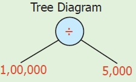
Example 5: Convert into a Tree diagram open bracket 9 into 5 close bracket plus open bracket 10 into 12 close bracket.
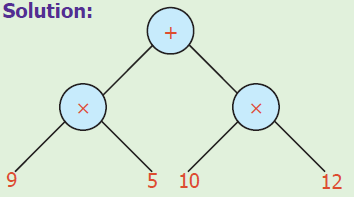
Example 6: Convert into a Tree diagram open bracket 10 into 9 close bracket minus open bracket 8 into 2 close bracket plus 3
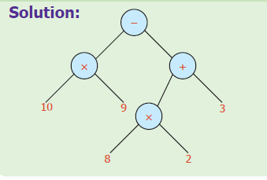
Example 7: Convert into a Tree diagram 8 plus open bracket 5 into 2 close bracket minus open bracket 2 into 3 plus 5
Example 8: Convert into a Tree diagram open bracket 9 minus 4 close bracket into 8 plus open bracket 8 plus 2 close bracket into 3
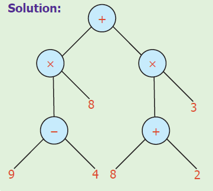
Example 9: Convert into a Tree diagram set bracket of open bracket 10 into 5 close bracket plus 6 closed bracket into closed bracket of 5 plus open bracket of 6 minus 2 closed curve bracket closed square bracket closed set bracket divided by open square bracket of 8 into open bracket of 4 plus 2 closed curve bracket closed square bracket.
![Example 9 This is a multiple branch tree diagram having 4 steps. The first step starts with division node as root and 2 multiplication node as branches. The first multiplication node has 2 plus nodes as branches. second multiplication node has 8 in the left side and plus node in the right side as branches. The second step starts with plus node having 6 in the left side and a multiplication node in the right side as branches ,another plus node having minus node in the left side and 5 in the right side as branches ,circle with addition symbol having four in the left side and two in the right side as branches .The last step has multiplication symbol with 10 in the left side and 5 in the right side has branches and circle with subtraction symbol having 6 in the left side and 2 in the right side as branches.](images/image-163.png)
Example 10: Convert into a Tree diagram 20 plus open bracket 8 into 2 plus set bracket (open bracket 6 into 3 close bracket) minus 10 divided by 5 }]
![Example 10-This is a tree diagram starts with + as root having 20 and + in the right side as branches. + has multiplication in the left side and subtraction in the right side as branches .multiplication has 8 in the left side and two in the right side as branches and circle with subtraction symbol has circle with multiplication symbol in the left side and circle with division symbol in the right side as branches. The circle with multiplication symbol in the last step has 6 in the left side and 3 in the right side as branches, circle with division symbol has 10 in the left side and 5 in the right side as branches .](images/image-164.png)
For instance, consider the tree
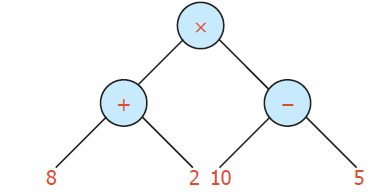
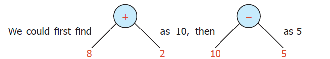
When we multiply the results 10 and 5 we get 50. When the nodes for addition and subtraction are interchanged the value remains the same which is represented using tree diagram as given below.
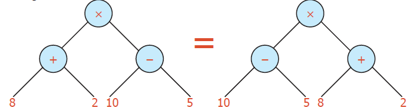
Does it mean that the branches also can be interchanged? Yes, when the node represents addition it is possible.
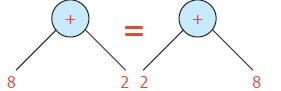
But it is not possible when the node represents subtraction.
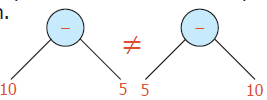
Therefore from this tree diagram.
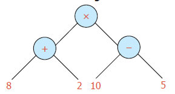
The expression can be converted into either open bracket 10 minus 5 close bracket into open bracket 8 plus 2 close bracket or open bracket 8 plus 2close bracket into open bracket 10 minus 5close bracket or open bracket 2 plus 8 close bracket into open bracket 10 minus 5 close bracket or open bracket 10 minus 5 close bracket into open bracket 2 plus 8 close bracket without changing the value.
Example 11: Convert the tree diagram into numerical expression.
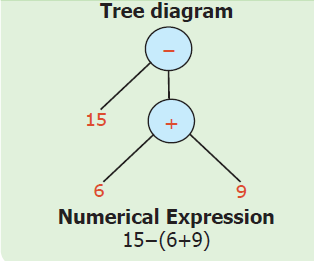
Example 12: Convert the Tree diagram into a numerical expression.
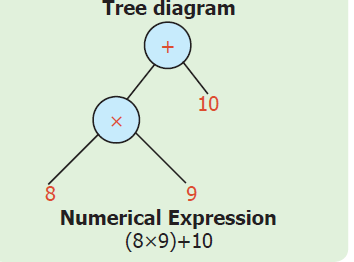
Example 13: Convert the Tree diagram into a numerical expression.
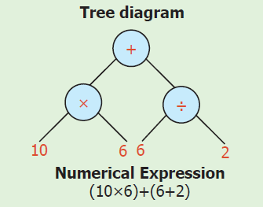
Example 14: Convert the Tree diagram into a numerical expression.
![Example 14. This is a tree diagram having circle with additions symbol as root and circle with multiplication symbol in the left side and a circle with the division symbol in the right side as branches. circle with multiplication symbol has 7 in the left side and circle with addition symbol in the right side as branches .circle with division symbol has circle with a subtraction symbol in the left side and three in the right side as branches. In the last step, addition node has 9 and 2 as branches and subtraction node has six and three as branches .](images/image-174.png)
There is more fun with trees. Observe the following trees
![Figure1. This is a tree diagram that has a circle with multiplication symbol as root and a in the left side and circle with addition symbol in the right side as branches .circle with addition symbol has b in the left side and c in the right side as branches. Figure2 This is a tree diagram has a circle with addition symbol as root and circle with multiplication symbol in the left side and the circle with the multiplication symbol in the right side as branches .First circle with multiplication symbol has a in the left side and b in the right side as branches, second circle with multiplication symbol has a in the left side and c in the right side as branches.](images/image-175.png)
The above tree is nothing but the familiar expression a into open bracket b plus c close bracket equal to(open bracket a into b close bracket ) plus (open bracket a into c close bracket). Thus we can see the algebraic expressions as trees.
• The tree on the left has less number of nodes and looks simple.
• The tree on the right has more number of nodes
• Can we conclude that the value of both the trees are different?
Example 15: Convert '5 a' into Tree diagram.
![Example 15:This is a tree diagram that has circle with multiplication symbol as root and five in the left side and a in the right side as branches . OR This is a tree diagram that has a circle with addition symbol as root and circle with addition symbol in the left side and a in the right side as branches. circle with addition symbol has circle with addition symbol in the left side and a in the right side as branches . circle with addition symbol has circle with addition symbol in the left side and a in the right side as branches. circle with addition symbol has circle with addition symbol in the left side and a in the right side as branches.](images/image-176.png)
Example 16: Convert '3a plus b' into Tree diagram.
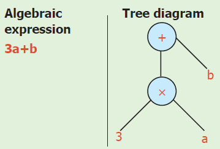
Example 17: '6 times a and 7 less ' Convert into a Tree diagram.
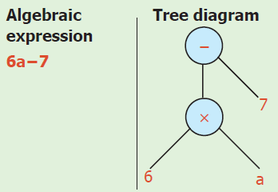
Example 18: Convert the tree diagram into an algebraic expression.
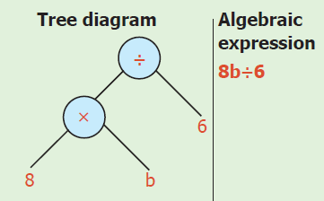
Example 19: Convert the tree diagram into an algebraic expression.
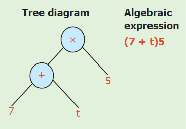
Example 20: Verify whether given trees are equal or not.
![Example 20: Figure 1:This is a tree diagram that has circle with addition symbol as a root and circle with addition symbol in the left side and c in the right side as branches. circle with addition symbol has a in the left side a and b in the right side as branches. Figure 2:This is a tree diagram that has circle with addition symbol as a root and circle with addition symbol in the right side and a in the left side as branches. circle with addition symbol that has a in the left side b and c in the right side as branches.](images/image-181.png)
Try these
![Figure 1 :This is a tree diagram that has circle with addition symbol as a root and a in the right side and circle with subtraction symbol in the right side as branches .circle with subtraction symbol has b in the left side and C in the right side as branches. Figure 2 : This is a tree diagram that has circle with the subtraction symbol as root and circle with multiplication in the right side and circle with multiplication symbol in the right side as branches .First circle with the multiplication symbol as a in the left side and b in the right side as branches. second circle with the multiplication symbol has a in the left side and c in the right side as branches. Figure 3: This is a tree diagram that has a circle with multiplication symbol as root and a is left side and circle with subtractions symbol in the right side as branches .circle with subtraction symbol has b in the left side and C in right side as branches. Figure 4: This is a tree diagram that has a circle with subtraction symbol as root and circle with multiplication symbol in the left side and C in the right side as branches .circle with multiplication symbol has a in the left side and b in the right side as branches .](images/image-182.png)
Question Number 1. Convert the above tree diagrams into an algebraic expression.
Question Number 2. Convert the following algebraic expressions into a tree diagram.
1) open bracket x minus y) plus z and x minus open bracket y plus z)
2) open bracket p into q) into r and p into open bracket q into r)
3) a minus open bracket b minus c) and open bracket a minus b) minus c
Do You Know?
Consider the numerical expression 9 minus 4. which means 4 is to be subtracted from 9. 9 minus 4 can be represented as minus 9 4 (so far, we have come across with operation in between the operands) Suppose the expression is 9 minus 4 into 2. This can be represented as x minus 9 4 2 gives the meaning of
Step 1: x 9 minus 4 2
Step 2: (9 minus 4) into 2
Take the expression plus x minus 9 4 2 5
Step 1: plus, x 9 minus 4 2 5
Step 2: plus open bracket 9 minus 4 close bracket into 2 5
Step 3: [open bracket 9 minus 4 close bracket into 2] plus 5
This is reading an expression from “left to right”. Similarly, we can read expressions from “right to left” also 9 4 2 5 plus x minus can be read as "right to left" expression which gives the meaning of 9 4 2 5 plus x minus equal to open bracket 9 minus 4 close bracket into 2 5 plus x equal to open bracket 9 minus 4 close bracket into 2 5 plus equal to [open bracket 9 minus 4 close bracket into 2] plus 5
Hence an expression can be read as “left to right” or “right to left” giving the same answer which is similar to name 4 as Naangu (நான்கு), Four, Nalagu and Char, all of them representing the collection of four objects. Similarly, the numerical expression
[open bracket 9 minus 4 close bracket into 8 ] divided by [open bracket 8 plus 2 close bracket into 3]can be written as divided by x minus 9 4 8 x plus 823 (left to right) or 894 minus x 382 plus x divided by (right to left).
Try these:
1) x minus plus 9 7 8 2
2) divided by x plus 2 3 8 5
Exercise 5.1
Question Number 1. Convert the following numerical expressions into Tree diagrams.
(1) 8 plus open bracket 6 into 2 close bracket
(2) 9 minus open bracket 2 into 3 close bracket
(3) open bracket 3 into 5 close bracket minus open bracket 4 divided by 2 close bracket
(4) [open bracket 2 into 4 close bracket plus 2] into open bracket 8 divided by 2 close bracket
(5) [open bracket 6 plus 4 close bracket into 7] divided by [ 2 into open bracket 10 minus 5 close bracket]
(6) [open bracket 4 into 3 close bracket divided by 2] plus [8 into open bracket 5 minus 3 close bracket]
Question Number 2. Convert the following Tree diagrams into numerical expressions.
![Figure 1 :This is a tree diagram that has a circle with multiplication symbol as root and 9 in the left side and 8 in the right side as branches. Figure 2 : This is a tree diagram that has a circle with subtraction symbol as root and circle with addition symbol in the left side and 5 in the right side as branches .circle with addition symbol that has 7 in the left side and 6 in the right side as branches . Figure 3 :This is a tree diagram that has a circle with the subtraction symbol as root and circle with addition symbol in the left side and the circle with addition symbol in the right side as branches .First circle with addition symbol has 8 in the left side and two in the right side as branches. Second addition symbol has 6 in the left side and 1 in the right side as branches. Figure 4 : This is a tree diagram circle with the subtraction symbol as root and circle with multiplication symbol in the left side and circle with the division symbol in the right side as branches .circle with the multiplication symbol has five in the left side and 6 in the right side as branches. circle with the division symbol has 10 in the left side and 2 in the right side as branches .](images/image-184.png)
Question Number 3. Convert the following algebraic expressions into tree diagrams.
(1) 10 v
(2) 3 a minus b
(3) 5 x plus y
(4) 20 t into p
(5) 2 open bracket a plus b close bracket
(6) open bracket x into y close bracket minus open bracket y into z close bracket
(7) 4 x plus 5 y
(8) open bracket l m minus n close bracket divided by open bracket p q plus r close bracket
Question Number 4. Convert Tree diagrams into Algebraic expressions.
![Figure 1 :This is a tree diagram that has a circle with addition symbol as root and P in the left side and q in the right side as branches. Figure 2: This is a tree diagram that has a circle with subtraction symbol as root and l in the left side and m in the right side as branches. Figure 3 :This is a tree diagram that has a circle with subtraction symbol as root and circle with addition symbol in the left side and c in the right side as branches. circle with addition symbol has a in the left side and b in the right side as branches. Figure 4 : This is a tree diagram that has a circle with subtraction symbol as root and circle with addition symbol in the left side and a circle with addition symbol in the right side as branches. First circle with addition symbol has a in the left side and b in the right side as branches. Second circle with addition symbol has c in the left side and d in the right side as branches . Figure 5 :This is a tree diagram that has a circle with addition symbol as root and circle with the division symbol in the left side and a circle with addition symbol in the right side as branches. circle with the division symbol has 8 in the left side and a in the right side as branches. circle with addition symbol has a circle with the division symbol in the left side and 3 in the right side as branches. circle with the division symbol has b in the left side and 4 in the right side as branches.](images/image-185.png)
Exercise 5.2
Miscellaneous practice problems
Question Number 1. Write the missing numbers in the trees.
![Figure-1 This is a tree diagram that has a circle with multiplication symbol as root and question mark in the left side and circle with division symbol in the right side as branches .circle with the division symbol has a question mark in the left side and question mark symbol in the right side as branches. Figure 2-This is a tree diagram that has a circle with the division symbol as a root and question mark Symbol in the left side and circle with addition symbol in the right side as branches .circle with a addition symbol has question mark symbol in the left side and the question mark symbol in the right side as branches . Figure 3-This is a tree diagram that has a circle with subtraction symbol as root and circle with addition symbol in the left side and the circle with addition symbol in the right side as branches. First circle with addition symbol has question mark in the left side and question mark in the right side as branches .second circle with addition symbol has question mark in the left side and question mark in the right side as branches .](images/image-186.png)
Question Number 2. Write the missing operations in the trees.
![Figure 1-This is a tree diagram that has circle with question mark as root and 8 in the left side and the circle with the division symbol in the right side as branches .circle with the division symbol has six in the left side and 2 in the right side as branches. Figure 2 -This is a tree diagram that has a circle with the question mark symbol as root and a in the left side 39 and circle with the question mark symbol in the right side as branches. circle with the question mark symbol has 6 in the left side and 5 in the right side as branches.](images/image-187.png)
Question Number 3. Convert the following tree diagram into an algebraic expression.
![Figure 1. This is a tree diagram that has a circle with the division symbol as root and c in the left side and circle with the division symbol in the right side as branches. circle with the division symbol has a in the left side and b in the right side as branches. Figure 2 This is a tree diagram that has a circle with the division symbol as root and a in the left side and circle with the division symbol in the right side as branches. circle with the division symbol has b in the left side and c in the right side as branches.](images/image-188.png)
Challenge problems
Question Number 4. Convert the following questions into tree diagrams:
(1) The number of people who visited a library in the last 5 months were 1210, 2100, 2550, 3160 and 3310. Draw the tree diagram of the total number of people who had used the library for the 5 months.
(2) Ram had a bank deposit of ₹ seven lakh fifty five thousand two hundred and fifty and he had withdrawn ₹ five lakh thirty four thousand five hundred for educational purpose. Draw a tree diagram for this.
(3) In a cycle factory, 1,600 bicycles were manufactured on a day. Draw tree diagram to find the number of bicycles produced in 20 days.
(4) A company with 30 employees decided to distribute ₹ 90,000 as a special bonus equally among its employees. Draw tree diagram to show how much will each receive?
Question Number 5. Write the numerical expression which gives the answer 10 and also convert into tree diagram.
Question Number 6. Use brackets in appropriate place to the expression 3 into 8 minus 5 which gives 19 and convert it into tree diagram for it.
Question Number 7. A football team gains 3 and 4 points for successive 2 days and loses 5 points on the third day. Find the total points scored by the team and also represent this in tree diagram.